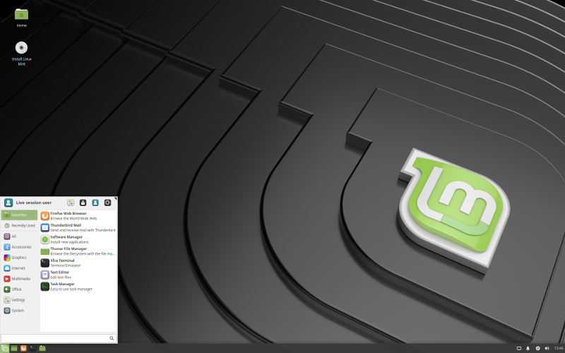

Пингвин с человеческим лицом

На линуксе я сижу давно и прочно, уже лет 14 или около того, но со временем поумнел и уже не пытаюсь переманить кого бы то ни было в свой лагерь. Каждый инструмент создан для решения определённых задач, у каждого человека есть свой собственный уровень консерватизма, свой уровень привычки к тому или иному инструменту и, как следствие, свой уровень желания либо, что бывает чаще - нежелания пробовать что-то новое, а насильно, как говорится, мил не будешь.
В сущности, я такой же точно консерватор, как и миллионы тех, что используют Windows или MacOS. Я вижу существенные недостатки в других системах, просто потому, что привык к своей и подсознательно считаю нормой то, как всё работает под ней (хотя парализующие обновления на Win10 и дыры со входом в MacOS с логином root и пустым паролем - это на мой взгляд за гранью добра и зла). В своём консерватизме я прошёл достаточно долгий путь и моя рабочая среда, моё рабочее окружение менялось много раз, с каждым разом становясь всё суровее и минималистичнее. Сначала это было KDE третьей версии, потом, когда выкатили четвёртую, я поплевался и переехал на гном. Когда появился гном третьей версии, я ужаснулся и переместился на XFCE4, а потом и вовсе перепробовал кучу тайловых менеджеров окон и ушёл на i3. Я как мхом, оброс множеством скриптов, алиасов, туннелей и прочих вещей, которые мне помогают каждый день уже на протяжении многих лет, со временем они эволюционируют, появляются новые, отмирают старые. Я собрал свой дистрибутив, в котором всё настроено так, как мне удобно, который состоит из подключаемых слоёв со сквешами и который мгновенно по необходимости первращается то в систему восстановления и бекапа данных с клонзиллой и прочим необходимым на борту, то в основу для сервера, то в рабочее десктопное окружение с уже настроенной средой и нужными скриптами. Процент консольного софта со временем всё увеличивается, а софта с графическим интерфейсом - наоборот. И как следствие, после старта мой дистрибутив даже с иксами занимает в оперативной памяти меньше двух сотен мегабайт, а на диске - около 1гб. Правда, ровно до того момента, пока chromium не поставит все плагины и накачает себе кеша, после этого к начальному гигабайту добавляется ещё половина и мне уже кажется, что это очень много (до недавнего времени пользовался PaleMoon, который намного экономнее расходует ресурсы, но он похоже, устарел). Из того, что осталось графического - пожалуй тот самый chromium, да zim для работы. Всё остальное используется редко и по случаю (FreeCad, Inkscape и т.п.). Многое из того, для чего раньше требовались отдельные приложения, ушло в web - почта, разводка плат, просмотр видео, ведение заметок и прочее. Для программирования в рамках своих маленьких проектов вполне хватает vim'а. Всё это позволяет мне для работы свободно использовать достаточно старое железо, в том числе и вообще без жёсткого диска. На 10ти летней давности ноутбуке с 2гб оперативной памяти я бы чувствовал себя прекрасно, если бы не то, что открытая страница с каким-нибудь gmail занимает в памяти около 400 мегабайт. Всегда было непонятно и любопытно - ну что же там может быть такого, что операционная система занимает в памяти в два с лишним раза меньший объём?
В то же время я прекрасно понимаю, что мои нужды существенно отличаются от требований среднестатистического пользователя, который не будет в консоли набирать mount и смотреть lsblk после того, как вставил флешку. Для него нужен значок на рабочем столе, в который он может ткнуть мышью. У моей жены вообще возникает впечатление, что линукс - это одна сплошная консоль, потому как 95% моей работы, да и развлечений в этой самой консоли проходят. Наверное и у многих других линукс так же ассоциируется с чем-то абсолютно недружественным к пользователю.
Когда меня спрашивали лет 10 тому, какой линукс попрбовать, я радостно предлагал Ubuntu. Лет 6-7 назад - из чувства самосохранения я уже предлагал не пробовать никакой и вообще отказаться от этой идеи, потому как посоветовав раз, ты как будто подписываешь обязательство быть для этого человека круглосуточной энциклопедией как по самой операционке, так и по всему (вообще всему) софту, который за последние 30 лет под линукс написало мировое сообщество и особенностям его работы. При этом совершенно не важно, что ты этим софтом не пользуешься и вообще можешь не знать о его существовании. Меня как-то один товарищ разбудил в 3 часа ночи, чтобы узнать какие-то подробности про наложение текстур на объект в блендере (приложение для 3d моделирования). Видимо, для него это было очень важно, а я как раз разбираюсь в линуксе. А если я разбираюсь в линуксе, то по канонам жанра, в 3 часа ночи мне спать не положено, мне положено наверное, собирать ядро. Вообще, желательно круглосуточно, ибо чем же ещё заниматься человеку, увлечённому Linux, как не собирать ядро? Ну не спать же ему в самом деле?
Но вернёмся к дистрибутивам. Десктопная убунта мне всегда казалась какой-то очень попсовой, обвешанной массой непонятных украшательств, рюшечек и оборочек. Часто вспоминал анекдот про трёхэтажный самолёт с бассейном, библиотекой и рестораном, который "со всем этим дерьмом" сейчас попытается взлететь. На эти рюшечки и оборочки тратились ресурсы, поэтому для своих каких-то целей, в том числе и для сборки своего дистрибутива я использовал минимальный rootfs Debian'а.
Много хорошего слышал от разных людей о Linux Mint, но самому попробовать до этого не приходилось. Раньше Linux Mint выходил в двух вариантах - непосредственно Mint базировался на репозиториях Ubuntu и так называемый LMDE - Linux Mint Debian Edition, основанный на Debian. К первому я относился предвзято - это ведь тот же трёхэтажный самолёт, разве что с небольшими косметическими изменениями, так же как и в установке второго варианта я не видел смысла по той же самой причине.
Но вот, пару дней назад курьер доставил мне свежий nettop, заказанный полмесяца назад в Китае, об этом устройстве я как-нибудь расскажу отдельно. Всё было бы прекрасно, но на этом неттопе я не смог запустить свою сборку лиункса. Похоже, видео на борту оказалось новее и подходящего модуля ядра не нашлось. Одним словом, я решил дать шанс минту. Скачал последнюю 19ю XFCE4 версию, записал на древнюю как фекалия мамонта 4-х гигабайтную USB 2.0 флешку, подключил к неттопу. Загрузка оказалась достаточно долгой, но это было ожидаемым, учитывая скорость флешки и объём образа, но затем всё заработало замечательно - звук, 3D/2D ускорение, Wi-Fi, Bluetooth. Всё сделано удобно, красиво, аккуратно. С эстетической точки зрения придраться не к чему. Из коробки темы GTK2, GTK3 и QT выглядят одинаково. С производительностью на n5000 проблем нет. Решил ставить и от процесса установки так же остались только благоприятные впечатления. Буквально минут за 17 LM подвинул Windows 10 на разделе и встал рядом. Я не стал использовать экспертную установку, мне было интересно, как будет установлен LM в режиме "по умолчанию". Итак, плюсы:
- хорошая поддержка железа
- отличный интерфейс
- пакетная база ubuntu, апдейты пакетов обещают выпускать до 2020го
- быстрый визард установки
- в стандартной поставке появился timeshift (аналог timemachine на MacOS)
- секьюрити апдейты будут выпускаться до 2023го года
- для новичков есть подробная документация по установке на русском языке
Из недочётов:
- после установки по умолчанию звук шёл через аналоговый выход, хотя после загрузки с live usb - через HDMI, при этом в настройках не было возможности выбора устройства вывода, проблема решилась запуском pactl set-card-profile 0 output:hdmi-stereo в консоли
- при установке по умолчанию был создан swapfile в корне на 2гб, хотя при 8гб памяти и установке на eMMC я бы не стал использовать swap совсем, хотя бы для того, чтбы сберечь flash
- если использовать timeshift, то наверное целесообразнее вместо ext4 было использовать btrfs, хотя возможно в экспертной установке была возможность выбора
- я отметил шифрование раздела, в итоге /home/%username% был зашифрован с помощью encfs, после того, как encfs признали уязвимым, я перестал за ним следить и ожидал увидеть cryptsetup и отдельный раздел под home, но судя по активности в github репозитории, коммиты идут, проект жив, последний релиз вышел в апреле 18го года, видимо, уязвимость давно устранили, но в любом случае использование FUSE для домашней директории пользователя это непривычно и скорости не способствует
- после удаления свопфайла, бекапов таймшифта, libreoffice, sane и прочего ненужного мне ПО, занято осталось около 7гб, что на мой взгляд очень много (хотя может быть я просто привык к своему дистрибутиву, который занимает 1гб)
Я давно не ставил ничего кроме своего дистрибутива линукса, дебиана в минимале, alpine и серверных версий ubuntu, поэтому установка LM оказалась для меня позитивным опытом. Как при работе, так и при установке создаётся некое ощущение комфорта (которого не было при попытках использования убунты), не покидает чувство, что всё сделано для обычных людей - всё на своих местах, к тому же прекрасно выглядит. Да, это всё тот же трёхэтажный самолёт, но при этом он комфортен, довольно быстро летает и вполне вероятно, что в некоторых случаях, как на неттопе, расположенном под телевизором и предназначенном для программирования и потребления мультимедиа контента, я буду им пользоваться. Конечно, я демонтирую бассейн, ресторан и что-нибудь ещё, что сочту для себя лишним, но возможно даже оставлю xfce4. Так же могу порекомендовать его всем, кто линукс ещё не пробовал, но пожалуйста, в случае вопросов умейте пользоваться гуглом.
Теги: linux